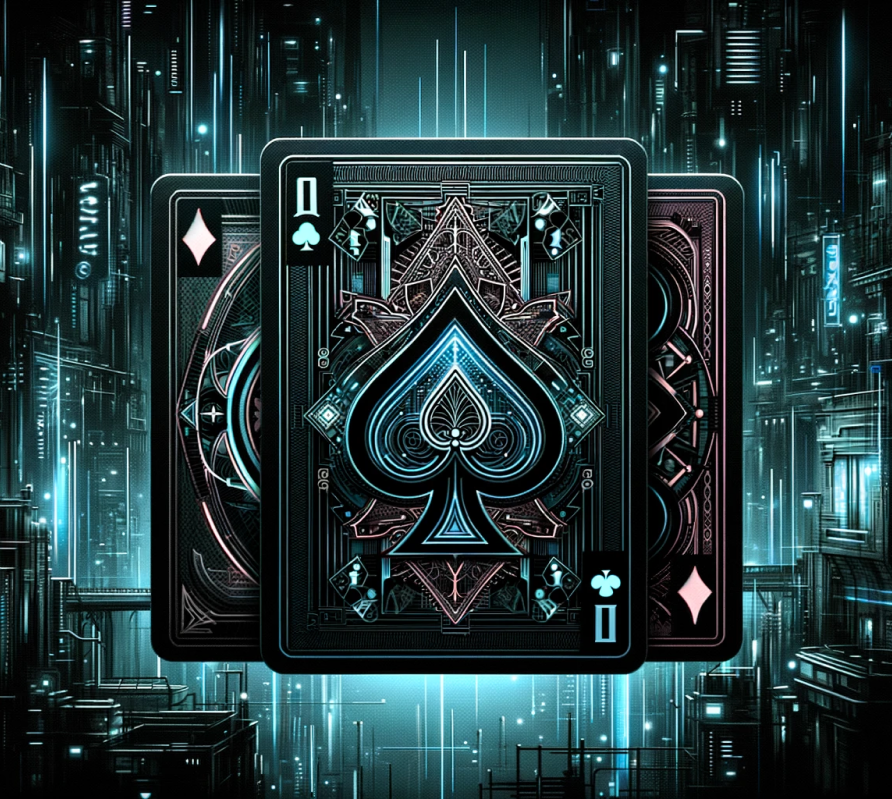

<div class="rule-page">
    <div class="rule-content">
      
      <div class="rule-text">
        <h2>Règlement du jeu</h2>
        <p><strong>Préparation :</strong> Chaque joueur choisit un deck de 5 cartes et sélectionne une carte secrète.</p>
        <p><strong>Affrontement :</strong> Les cartes sont révélées, la plus forte gagne. En cas d'égalité, aucun point n'est attribué.</p>
        <p><strong>Détermination du Vainqueur :</strong> Le joueur avec le plus de points après 5 rounds remporte la partie. En cas d'égalité, personne ne gagne.</p>
        <p><strong>Gestion des Cartes/Decks :</strong> Les joueurs peuvent créer, modifier et supprimer leurs cartes et decks. Les decks doivent avoir 5 cartes et une force totale ne dépassant pas 30.</p>
      </div>
    </div>
  </div>
  